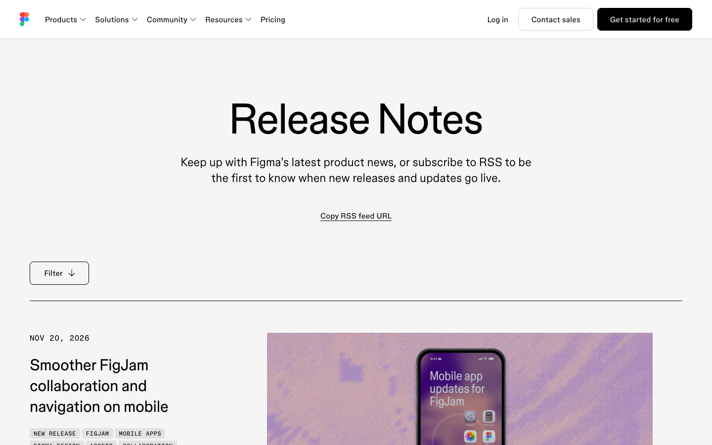
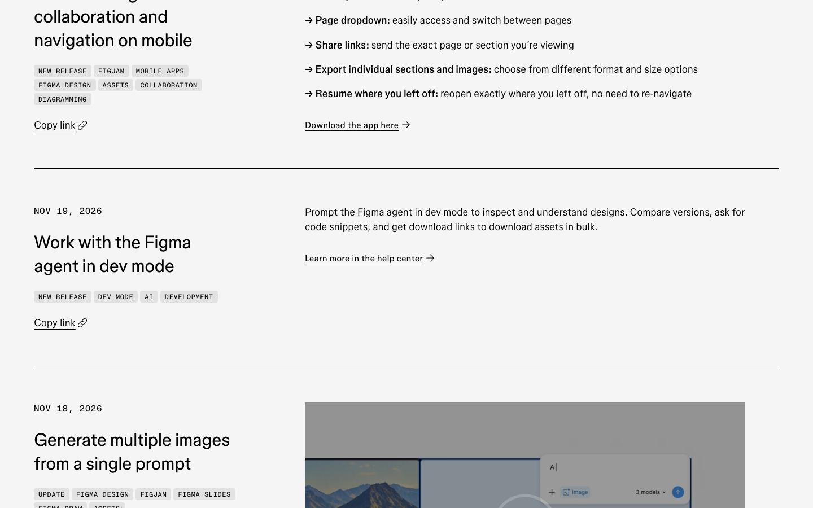
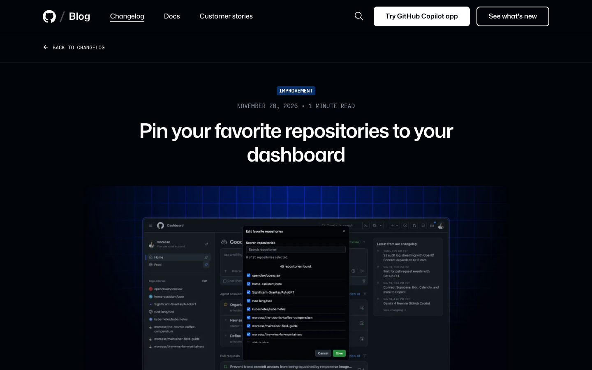
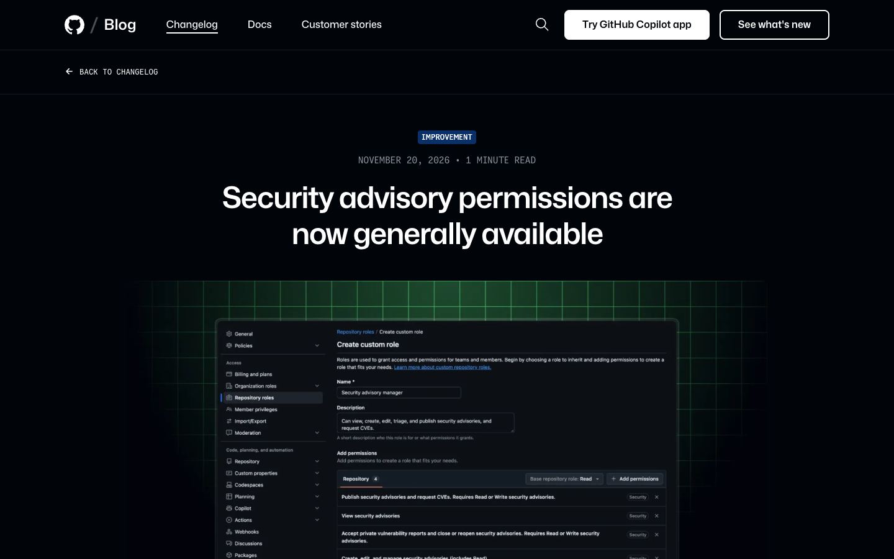
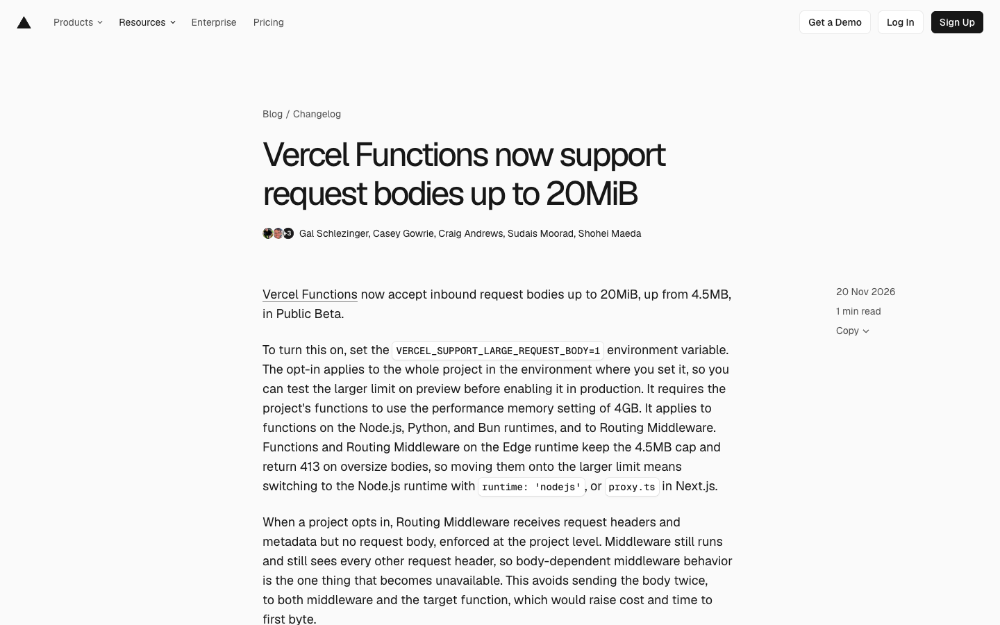
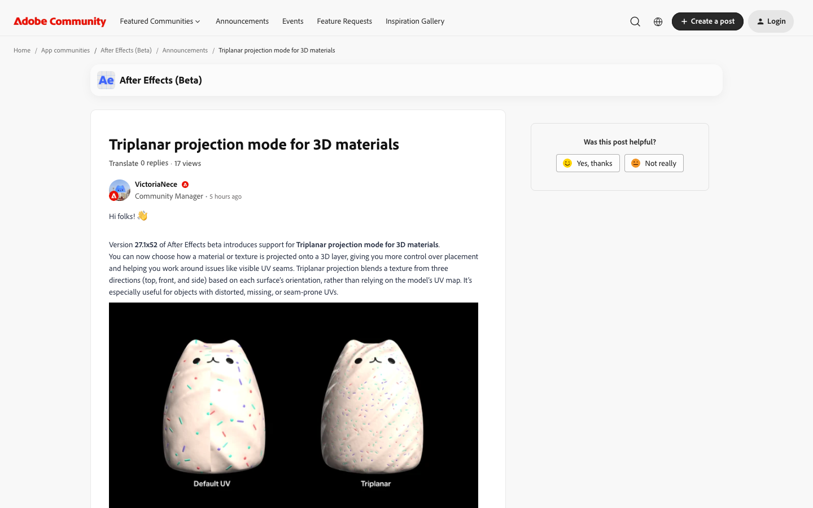
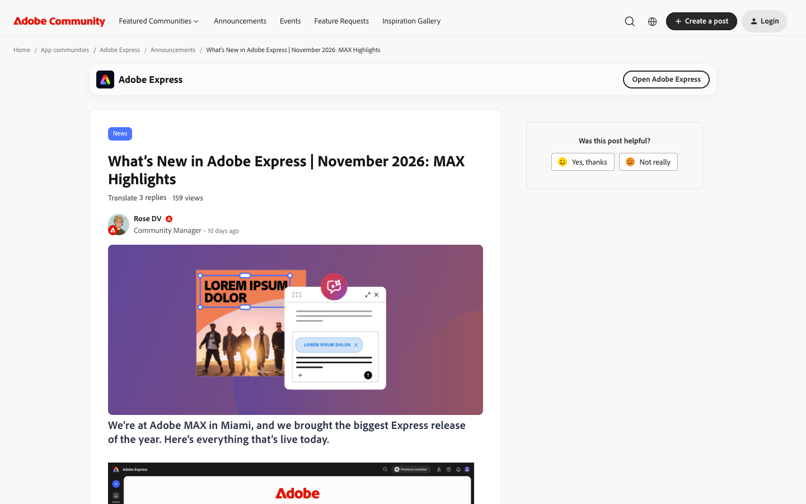
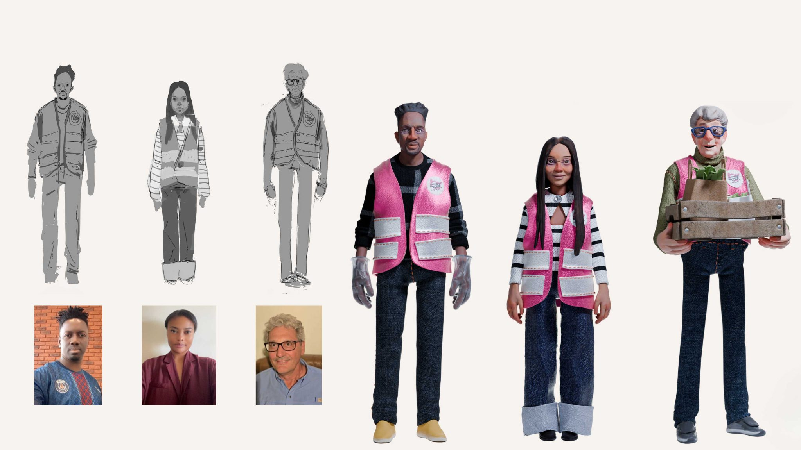

今天最实用的更新都没有抢着发明新画布，而是在修“人已经到了，信息却没跟上”的断点。Figma 把移动端恢复位置、精确章节链接和单独导出补齐；GitHub 让常用仓库与安全权限落到明确名单；Vercel 则把上传体积、运行时和内存代价写成硬边界。对设计团队来说，这比再多一个生成按钮更接近生产力：交接对象要能定位，权限要能收口，工程限制要在方案阶段出现。除公开页面、After Effects Beta 与播放器验证外，今天没有做真实团队项目实测，官方说明不改写成亲测结论。

Figma 11 月 20 日给移动端补上评论位置提示、嵌套 section 的 frame 预览滑杆、页面下拉切换、精确到 page / section 的分享链接，以及 section 和图片的独立格式、尺寸导出；重新打开时还能回到上次位置。
这不是“手机也能看 FigJam”，而是把移动评审从截图聊天拉回文件坐标。最有用的是精确链接和恢复位置：评审人不用再写“右下角那块”，设计师也不用重新走一遍页面树。

11 月 19 日的 Dev Mode Agent 能检查和理解设计、比较版本、给代码片段，并批量提供资产下载链接。官方 release note 没写清具体套餐、额度和失败是否计费，先不把它当作免费交付层。
它真正要过的不是“会不会描述画面”，而是能否稳定回答组件来源、变量值、状态差异与资产清单。下一轮实测应拿同一组件的两个版本追问差异，再核对它给出的代码和下载资产是否都指向正确节点。

GitHub 新 Dashboard 可以手动维护 Favorite repositories：搜索时已选项不会消失，保存后新仓库排在末尾；它与 GitHub Mobile 的 pinned repositories 同步，共用 25 个上限，超限时整次保存不会落地。
这类小更新比“智能排序”更可信。常用仓库是用户主动声明的工作集，不该被最近访问或热度替代；25 个上限和原子保存也把边界说得够清楚。

组织管理员现在能在 custom repository roles 里单独开放四档 Security Advisory 权限：查看，创建/编辑/管理，接受私密漏洞报告与关闭/重开，以及发布公告和申请 CVE。权限可以只给维护者负责的仓库，不再为了处理漏洞把人升成 repo admin 或全组织 security manager。
仍有硬边界：合并临时私有 fork 需要管理员或 security manager；这些新角色不能删除临时 fork；机密评论还要求写权限。它把“安全工作很敏感”翻译成可操作的层级，而不是继续用一个大管理员开关糊住责任。

Vercel Functions 的入站 request body 在 Public Beta 可从 4.5MB 提到 20MiB。需要设置 VERCEL_SUPPORT_LARGE_REQUEST_BODY=1，按项目与环境生效，并把 Functions 调到 4GB performance memory；Node.js、Python、Bun 和 Routing Middleware 可用，Edge 仍是 4.5MB。
代价不能藏在“支持大文件”后面：项目一旦 opt in，Routing Middleware 仍能读 headers 和 metadata，但拿不到 body；大 body 还要尽快消费，避免 backpressure 与内存问题。上传型产品先在 Preview 开开关、测 413 和内存峰值，再决定是否进 Production。

After Effects Beta 27.1x52 加入 Triplanar：纹理由上、前、侧三个方向按表面朝向混合，不再完全依赖模型 UV，针对缺失、扭曲、接缝明显或球体两极夹扁的素材尤其直接。位置、缩放、旋转可调，还有 Blend Softness、Fit to object 与 displacement 支持。
它不会替代正规的 UV，但能省掉“只是想让一张材质先看起来对”的往返成本。产品片里常见的临时 3D 字、参数化形体和快速换皮最吃这套；正式交付仍要看接缝、运动时的纹理游移和最终渲染成本。Beta 还没实测，先不下稳定性结论。

Adobe 11 月更新把 Express 的 AI Assistant 扩到更多桌面端 Individual Free / Premium 用户：一次给四个方案，可继续对话改文案、图片、图层、配色和布局，也能挂品牌；Teams、Enterprise、Education 目前还没开放。同期还加入从 PDF / JPEG / PNG 抽取品牌、在 ChatGPT / Claude / Copilot / Gemini 里调用 Express，以及导出 IDML、分层 PSD。
最有价值的不是四个首稿，而是“生成后还能回到手工编辑”和跨工具保留结构。可惜企业权限、品牌检查、字体映射和 IDML / PSD 还原度才决定能不能接进团队交付；这些没有项目级测试前，只能把它当候选入口。
YouTube 原片https://www.youtube.com/watch?v=Zxu2mh-QKiM · Mathematichttps://mathematic.tv/

这支 55 秒公益片由 Paris agency Change 提案、Thomas Bertrand 执导、Mathematic 制作。核心隐喻是一道不断穿过城市、住宅和人群的巨大裂缝，把贫困造成的社会分隔做成可以被镜头看见的物理对象；结尾从动画切回真人志愿者，把“弥合裂缝”落到现实行动。制作方明确写了没有使用 AI，采用 3D 动画模拟手工定格的触感。
片子的好不在“把 3D 做得像黏土”，而在材质、镜头和议题站在同一边：毛毡与纤维的粗糙表面、略带模型比例的角色、浅景深与暖色实景光，让宏大的社会命题保持在人能触到的尺度；裂缝负责推进叙事，粉色志愿者马甲负责跨场景识别，最后真人出现才不会像另起一段广告。
YouTube 嵌入已用飞书来源页作为 referrer 实测：readyState 4，960×720，55.041 秒，播放从 1.40 秒推进到 4.41 秒，媒体请求返回 200。产品发布片可以直接借它的结构：先选一个能贯穿界面的“物理问题”，只给一个品牌色承担识别，再用最后一个真人或真实场景镜头收回证据；别让 3D 材质自己充当故事。
今天已覆盖 Figma 移动端 FigJam 协作与 Dev Mode Agent、GitHub Favorite repositories 与 Security Advisory custom roles、Vercel Functions 20MiB request body、After Effects Beta Triplanar、Adobe Express 11 月更新；完整视频为 Thomas Bertrand / Mathematic《The Divide》。Stash 已登记该片、OFFF Montreal panel、Dancing on Osees、Raven R 与 Give the Gift of Closeness，后三项只保留既有边界。
继续避免重复：11 月 20 日的 Replica、Vercel Board、GitHub PR Overview readiness、gh event listen、Vercel Billing CLI、Open Source Accessibility Framework 与 Dancing on Osees；11 月 19 日的 Figma 多图生成、OAuth / MCP allowlist、Vercel Drives、单秒静态部署、soft navigation、Chrome DevTools 12 月更新与 Raven R；11 月 18 日的 Copilot / WebKit / Vercel 既有条目与 Quorum。